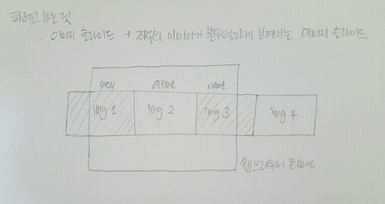

좌우의 이미지가 불투명하게 보여지는 이미지 슬라이드

1. 이미지의 위치에 따라 각각 아이디명을 지정해주는 방법(prev, active, next)
2. 불투명하게 보이는 것 : 스크립트로 이미지의 형제요소를 만들고 css로 투명도 지정하기.
3. float:left를 해야할 지 possition:absolute를 해서 left값을 각각 지정해야할 지 아직은 잘 모르겠음.
1. 굳이 각각의 이미지에 left 값을 줄 필요없이 클래스의 스타일에 레프트값 지정해두고 아이디명만 번갈아가며 붙이기
그럼, 아이디명을 어떻게 붙일 것인가 -> 배열의 순서대로 일정시간이 지나면 클래스명을 붙여주기
클래스 붙이는 메소드 종류
- classList.add('on');
- classList.contains('on');
- += className;
2. 숨겨져야 하는 네번째 이미지는 어떻게 할 것인가?